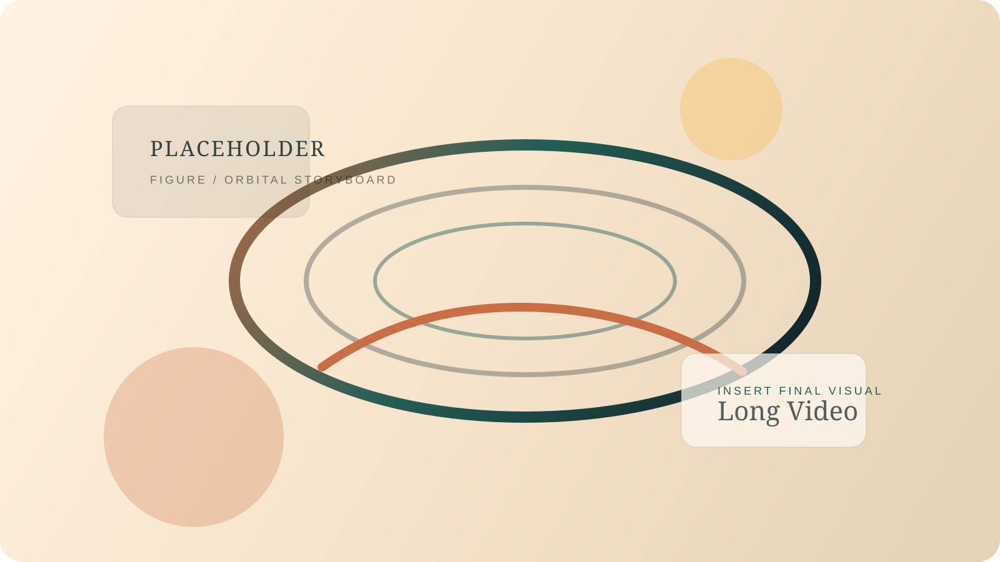
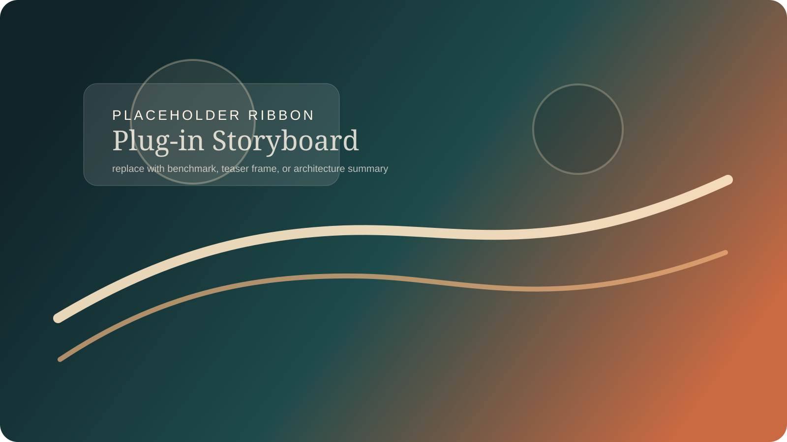
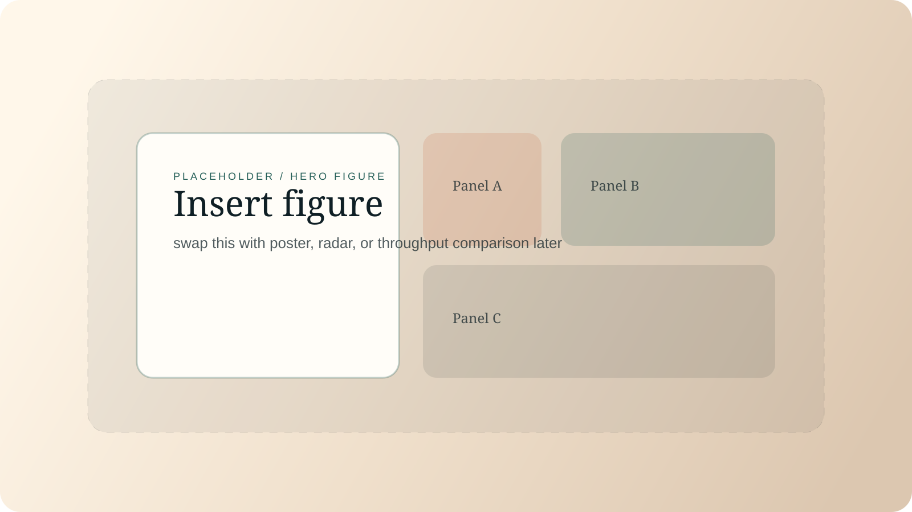

L
LongLive + ForcingKV



Abstract
This page follows the minimalist upper layout of the reference
Helios project page: title, author strip, a few figures, and one concise abstract block. Below the fold, we present two higher-level families, LongLive and Self Forcing, with their selected sets vertically stacked in the exact order of candidate.txt. Each case keeps the compare card simple and lets the hierarchy itself communicate the base model.